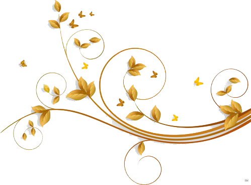

{ 没有账号=>>点此注册 }

让我们一起来看看那些奇特的植物
大草花最近被分配到大戟科，是世界上最大的单独生产的花。它相距3英尺，重量高达15-24磅。但是你不喜欢这么大的话。这是为什么呢？因为盛开时散发出最难闻的气味。这种气味有点像烂肉。这就是为什么它通常被印度尼西亚的一些土著人称为尸体植物。它的花朵只持续三天到一周.它产生的这种可怕的气味吸引了授粉昆虫以帮助使物种繁衍生息。
划 动 一 下 鼠 标 试 试
尸体花比人高的花，一条非常腐烂的路，还有一个黑色的勃艮第式的腐烂的肉体模仿品，听起来像是一部低成本的科幻电影。但是印尼巨蜥，或者说是当地所熟知的“死花”，确实是一种罕见的现象，在野外由寻找腐肉的昆虫传粉。印度尼西亚植物被称为泰坦芋或魔芋钛，是世界上最大的花序。由于它的香味，使人联想到分解的哺乳动物，泰坦Arum也被称为“尸花”或“尸体植物”。
 查 看 详 情
查 看 详 情
查 看 详 情
查 看 详 情
花朵分类
点击查看更多 海棠无香，因为海棠暗恋去了，她怕人闻出了心事，所以舍去了香。秋海棠象征苦恋。当人们爱情遇到波折，常以秋海棠花自喻。古人称它为断肠花，借花抒发男女离别的悲伤情感。花语就便有“苦恋”了。
满天星是清雅之士所喜爱的花卉，素蕴含“清纯、致远、浪漫”之意。满天星的花语是思念、青春、梦境、真心喜欢。它蕴含着清纯、致远、浪漫的意思。
杏花作为春天的使者，开花是最早的，其实杏花也是酒的使者，在阳春三月，风和日丽，桃红李白，撩人心魂。
永远属于你：这是杜鹃花最浪漫的一个花语，非常适合恋人用来表达对彼此的爱恋，如果你觉得用玫瑰来表达爱意比较俗套，不妨换成杜鹃吧。
花朵欣赏

 桃花
桃花
鼠标放在图片上可查看高清
桃花，即桃树盛开的花朵，属蔷薇科植物。叶椭圆状披针形，核果近球形，主要分果桃和花桃两大类。桃花原产于中国中部、北部，现已在世界温带国家及地区广泛种植，其繁殖以嫁接为主。
如果你也对大自然有兴趣，不妨
加入我们！！！大自然之谜
中国 · 河北 · 唐山 · · · 绿叶子有限公司
关于我们
版权声明
联系方式：18000000000
邮箱地址：1111@qq.com
扫一扫，关注我们